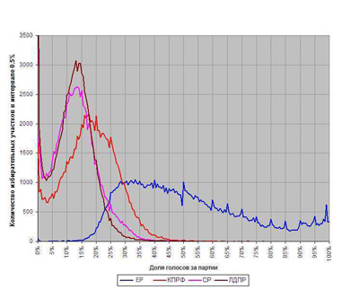
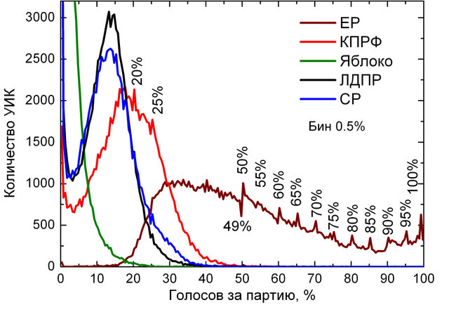
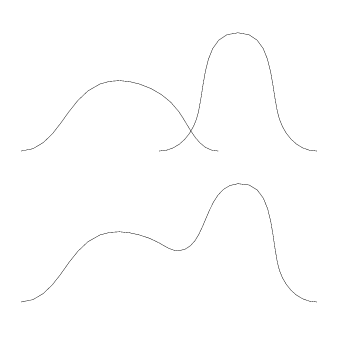

Стоит ли отвечать фальсификацией математики на фальсификацию выборов?
Юрий Неретин
15.12.2011
Автор, как и многие его сограждане, удручен прошедшими выборами. Известна, например, пугающая статистика голосования
по регионам (которая становится еще более грустной, если понять, что регионы массового голосования за ЕдРо были и местами массовой явки на выборы). Известно и то, что число избирательных участков, где за ЕдРо проголосовало точно 50, 60, 65, ... (далее числа, кратные пяти) неожиданно велико. Известны показания наблюдателей от партий...
Но данная заметка не об этом, и вообще не о выборах.
Я лично могу предъявить много обоснованных обвинений нашему руководству и высокой элите. Как будто, я в этом не одинок. Но в интернете и некоторых mass-media я столкнулся с массовыми обличениями председателя избиркома Чурова в существовании негауссовых вероятностных распределений.
Приведу один пример, самый массовый, и служащий своего рода символом веры...Вот две (почти одинаковых) диаграммы, автор первой - Сергей Шпилькин, автор второй - Максим Пшеничников. С одной из этих картинок люди ходили на митинг... На основании этой диаграммы и исходя из того, что распределение должно быть гауссовым, производится вычисление "действительных процентов" проголосовавших за разные партии.


На обеих картинках изображена общероссийская статистика по избирательным участкам. По горизонтали - проценты голосов, отданных за партии, по вертикали - число избирательных участков, на которых достигнут данный процент. Эти диаграммы позволяют уверенно сказать о наличии фальсификации за счет "зубчиков" на значениях 50, 60, 65, ... . На этом основании можно сделать нижнюю оценку
значения фальсификаций (автор не вычислял, думаю, порядка 2-3 процентов или, скорее, чуть больше). Эти проценты вовсе не безобидны с точки зрения результатов выборов. Понятно, что общий размер фальсификаций мы так не вычислим. Здесь спорить не о чем, и речь не об этом...
Чуров обвиняется в негауссовости нарисованных на графиках распределений. В этом, простите, он невинен. Потому что ЭТИ РАСПРЕДЕЛЕНИЯ НЕ МОГУТ БЫТЬ ГАУССОВЫМИ. Чуров мог лишь их шевелить в ту или иную сторону.
Попытаюсь объяснить это без привлечения какой-либо "высокой" науки, при том, что высокая наука тут и ни причем.
Представим себе идеальный российский регион с идеально однородным населением (вроде "сферической лошади в вакууме" из книжки "Физики шутят"). Таких регионов в России нет, но давайте себе такой представим.
Представим себе, что избиркомы идеально провели голосования. Давайте сочтем полученное распределение (то, которое рисовалось на картинках) гауссовыми. Теперь представим себе Россию, состоящую из двух существенно разных идеальных регионов. Нам придется сложить два графика.
Вполне может получится волнистая линия.

И даже если линия будет куполообразной, гауссианой она не будет, за редчайшими исключениями.
При сложении многих таких графиков могут получаться самые разнообразные картинки, в зависимости от того, какие плотности мы складываем.
Есть люди, которые могут подумать, что если сложить много гауссовых плотностей (в случае России - 100), то получится гауссова кривая. Но это лишь предмет мистической веры. В однородной Швеции наверно так получится. В Нигерии - вряд ли..
Давайте задумаемся, что могло бы получится в России. Есть много не особенно довольных властью средне-русских областей. Если бы мы объединяли их, то получили бы картинку, напоминающую (возможно отдаленно) гауссиан.
Есть ряд национальных республик, которые голосуют (или "голосуют") в интересах местных элит. С другой стороны, риторика Медведева последнего года была направлена на получение им поддержки в национальных республиках. Это реальности нашей страны, реальности печальные, но это не результат деятельности избиркома.
В итоге на графике ЕдРа возникают два (условных) "колокола", а низменность между ними - разные промежуточные случаи. Протестное голосование завсит от социально-экономической обстановки в регионах, от руководства регионов, от репутации местных оппозиционеров и т.д. и т.п. Какие-то промежуточные регионы должны найтись
Ну и при смешении всего этого должно получиться что-то вроде нарисованного графика Едра.
В действительности все чуть сложнее, потому что многие регионы неоднородны (даже Москва), и никаких оснований ожидать везде гауссовых распределений нет.
Можно заметить, что графики трех оппозиционных партий КПРФ, СР, ЛДПР похожи между собой, и все они имеют странный хвостик слева. Что означает, что были избирательные участки, давшие почти нулевой результат. Это, отчасти, влияние регионов типа Северного Кавказа, а отчасти разных экзотических (с точки зрения столичного жителя) избирательных участков. Это одно из проявлений того, что графики распределений во многих регионах не гауссовы...
Меня могут спросить, а как же фальсификация влияет на график? Отвечаю - график шевелится с примерным сохранением формы...
Читатель может воспринимать это как задачу. На мой взгляд, на реальном графике ЕдРа впадина должна еще прогнуться,
а левый купол должен расшириться вправо и вырасти в высоту.
Если бы меня, не показывая мне эти графики, попросили бы нарисовать примерные формы этих 5 графиков, каковыми
они должны были бы быть без воли Чурова... я бы их примерно такими и нарисовал (испытывая некоторые сомнения о форме загибов в крайнем левом участке). "Проценты" же зависят от точного расположения графика, а не от его примерной формы
Не буду пытаться реферировать других сочинений на ту же тему, их очень много, уровень их вызывает недоумение, эти исследователи завязаны между собой, очень редко кто-нибудь дает отпор абсурдным или необоснованным заявлениям.
В частности, картинки, приведенные выше, являются общепризнанным слоганом этой отрасли.
Добавлю, что очень рисковано делать глобальные выводы
из анализа статистики ЦентрИзбиркома без подключения социологических исследований. Потому что неоднородность выборок
(то, что производит кажущиеся экзотичными картинки) - это проблема социологии. Так же, как не очевиден
внутренний "случайный процесс", заставляющий человека не голосовать или голосовать тем или иным образом (причем в разных стратах общества он может быть разным).
Мне кажется, что люди, теми или иными способами отстаивающие лучшее будущее нашей страны, могли бы обойтись без подобных услуг. Мне также кажется, что это не совсем безопасно для российской науки, и для математики в особенности.